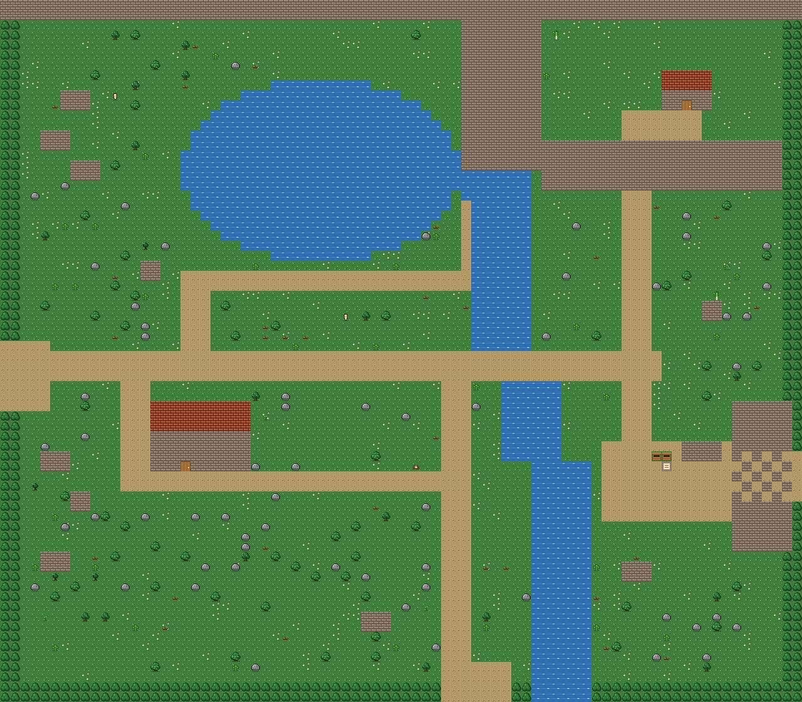
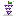
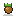
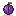
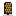

The Mountain
| Size | 80 by 70 tiles |
|---|---|
| Riding | Ride a horse here |
| Fishing | 7 fish |
| Buildings | Forge |
The high ground above the valley, with a mountain lake and the way down to the mines.

Forage
-
Spring:
 Wild leek,
Wild leek,
 Wild horseradish
Wild horseradish
-
Summer:

Wild grape, Spice berry -
Fall:

Hazelnut, Field mushroom,
Field mushroom,

Wild plum -
Winter:
 Crocus,
Crocus,

Pine nut, Holly sprig
Holly sprig